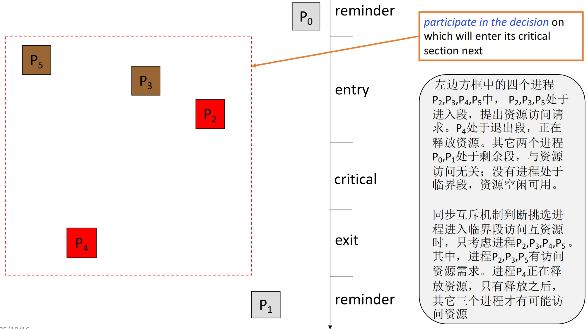
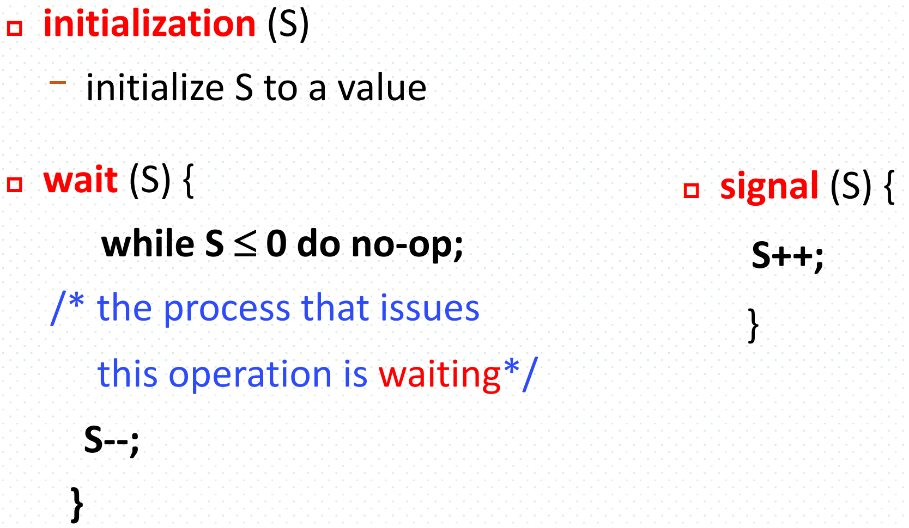
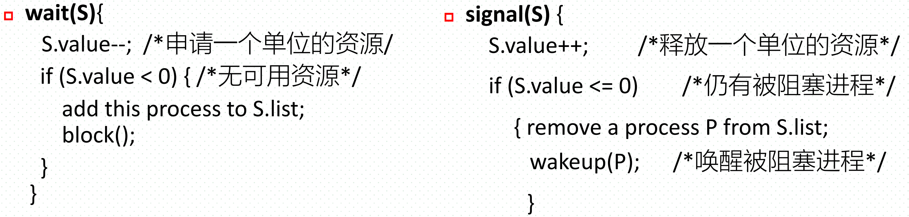
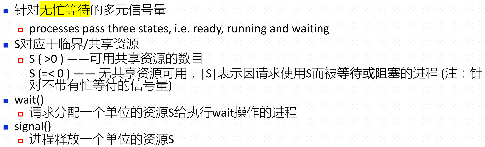
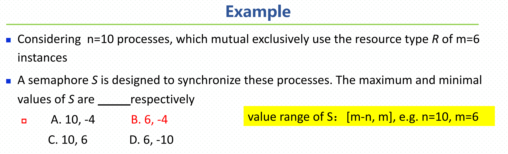
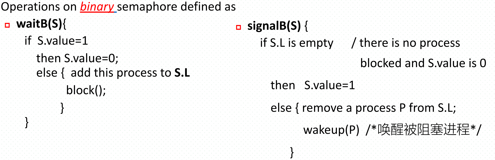
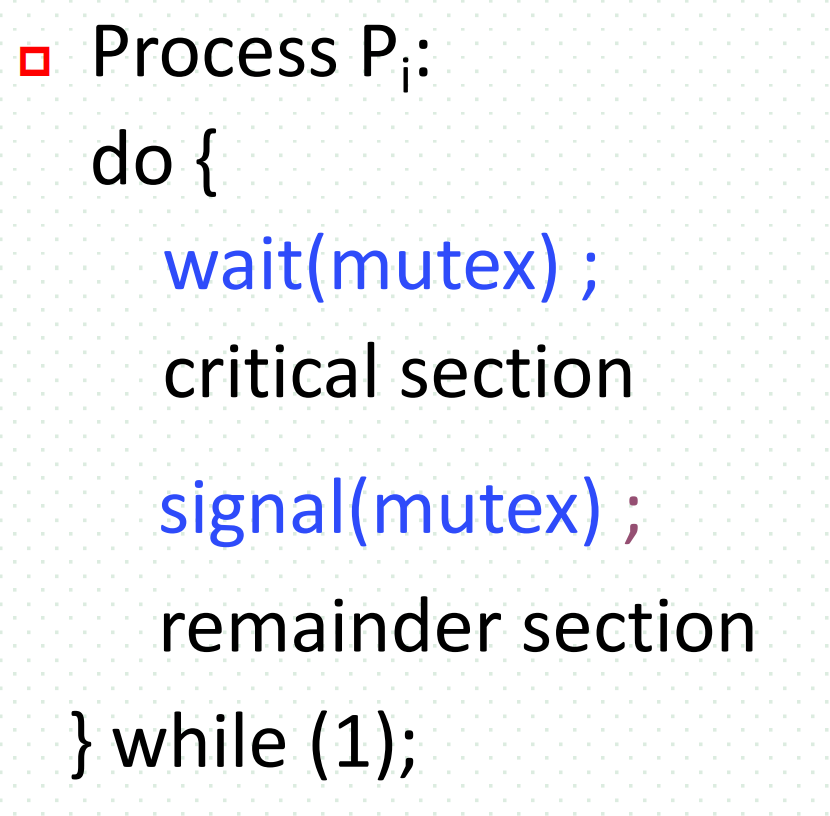
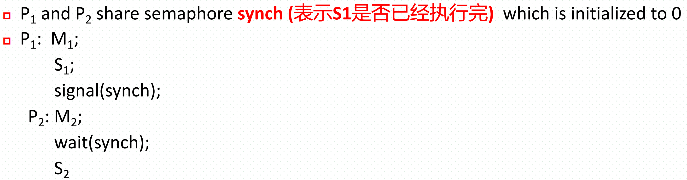
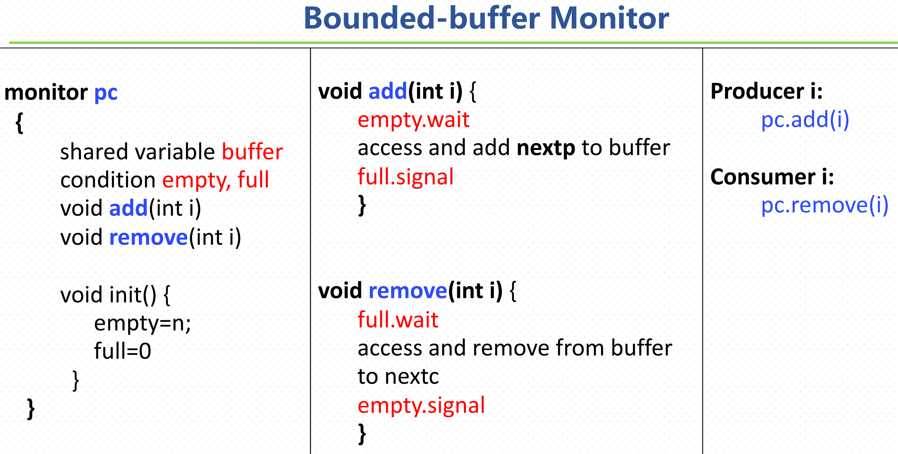

CH6--Process Synchronization
Process Synchronization
6.1 Concept
background : 由於在多進程環境中存在需要互斥訪問的「共享資源」和「共享數據」，為了避免「數據不一致性」的問題，必須引入「進程同步」機制來保證進程的有序執行。
–> Bounded-Buffer Problem（producer and consumer problem）
Race condition（競爭條件） ：多進程并發訪問共享數據且數據的結果由執行順序决定
例： A讀取（money=500）
B讀取（money=500）
A存100（money=600）
B取50（money=450）
A寫回（money=600）
B寫回（money=450）->發生了錯誤，total應該是500＋100-50＝550而不是450
- 導致該問題的核心原因是producer和consumer是并發的
- 該問題會導致數據不一致，故需要同步（互斥方法）來解决
6.2 Critical-Section Problem（臨界資源問題）
Critical-Section（臨界區）：進程的代碼段稱為臨界區/段，共享資源是在那里被訪問的
需求目的：當一个進程正執行在臨界區并訪問資源時，不允許有其他進程進入臨界區
解決該問題所必須實現的三个條件：
mutual exclusion （互斥）：只有當兩個進程試圖同時訪問同一個共享資源時，才需要互斥。否則可并行
progress （推進）：當沒有進程在臨界區內，且有進程希望進入時，必須在有限時間內做出決定，允許其中一個進程進入。（只考慮remainder區以外的所有進程）

bounded waiting （有界等待）：確保一個進程在提出進入臨界區的請求後，它進入臨界區的等待時間是有上限的，不會發生飢餓（Starvation）
6.3 用於解决臨界資源問題的算法
Peterson Algorithm （兩進程間）
1
2
3
4
5
6
7
8
9
10
11
12
13
14
15
16
17
18
19
20
21
22
23
24
25
26
27
28
29P_i_strcture{
enter_section(i),
critical_section(i),
exit_section(i),
remainder_section(i)
};
// 對於i和j兩个進程
boolean flag[2]; //用於標識哪个進程想要enter
flag[i] = flag[j] = false
int turn = 0; //用於標識當前哪个進程被允許訪問臨界區
//對於進程i
do{
// enter_section(i)
flag[i] = true //假設i進程想要進入臨界區
turn = j //主動讓j先行，讓步機制
while(flag[j]==true && turn==j)
{do-nothing};
// enter_section(i)_End
// critical_section(j)
// exit_section(i)
flag[i]=false //表明自身不再需要進入臨界區
// remainder_section
}while(1)關鍵點在於讓步機制：若两進程同時到達進入區，最後執行turn的進程會把進入權交給對方
（所以是先執行turn的先進臨界區）
在分時系統中，两个進程有一个在臨界區執行，一个在busy waiting（即不斷檢查自身的判斷條件）。两个進程在ready和running的狀態中不斷轉換
Bakery Algorithm
原理：所有進程進入臨界區前必須排隊取號，每次只能有一个進程在取號，號小的可以進臨界區，號相同時ID小的先進。所有號都是單調递增的
1
2
3
4
5
6
7
8
9
10
11
12
13
14
15
16
17
18
19
20
21boolean choosing[n];
int number[n];
// for P_i
do {
choosing[i] = true
number[i] = max(number[0], number[1], ... number[n-1])+1
choosing[i] = false
for(j=0; j<n; j++){
while(choosing[j])
while((number[j]!=0 && {(number[j], j) < (number[i], i)}))
}
// critical_section
number[i] = 0
// remainder_section
}while(1)
6.4 Semaphores
1. Definition
由 OS 在 kernel space 提供的一種多个進程間的同步與互斥的機制，信號量也稱之為鎖（ Lock ），
多數情況下鎖特指的是二元信號量，主要用於互斥
type of Semaphores
- Binary Semaphores（二元信號量 / mutex Lock互斥鎖）：用於互斥
- Counting Semaphores（計數、多元、一般信號量）：用於同步和互斥
2. Semaphore features
Semaphore with busy-waiting（CPU利用率低）
- Only have two states ( ready, running )
- The operations are :

Semaphore without busy-waiting
Have three states ( ready, running, waiting)
The Counting Semaphore operations are：Blocked，wakeup。S.list代表blocked的進程
important



信號量一般被初始化為最大共享資源數，故最大信號量也等於最大共享資源數。
$S_{min} = S_{initial} - 進程總數$
3. 信號量的三種用法
用於資源互斥 （二元信號量）

- n个進程并發訪問共享資源R
- mutex初始化為1

用於資源競爭
用於進程同步

4. deadlock
多个進程間彼此互相等待對方所拥有的資源，在得到前不願釋放自己的資源，故導致大家都得不到對方的資源。
滿足以下4个條件就有可能出現死鎖：1. 互斥 2. 占有且等待 3. 不可搶奪 4. 具有環路
6.5 Classical Problem of Synchronization
1. Bounded Buffer Problem
- 使用二元信號量以及計數實現互斥和同步來解决（三个信號量），先同步後互斥
- 初始化：full = 0（緩冲區中已被占的位置）, empty = n（緩冲區中空的位置）, mutex = 1
- 同步：full滿producer必須等，empty空consumer必須等
1 | // Producer |
同步必須先於互斥，否則會導致死鎖
2. Readers Writers Problem
問題：Readers只讀不改，Writers又讀又改。不同步會導致數據不一致，reader和writer讀到的數據不同。
解決方法：同步（reader間并行，writer與所有都斥）
- 限制1 ：允許多个reader同時讀數據庫
- 限制2 ：任一時刻只允許一个writer訪問數據庫
- 限制3 ： writer訪問數據庫時不允許有其他reader或writer同時訪問
两个信號量（wrt、mutex），一个計數器（readcount）
初始化：wrt = 1（寫操作的互斥信號量）, mutex = 1（變量readcount的互斥信號量）, readcount = 0
- 讀者優先：無reader時writer才可工作
1 | // Reader |
第一个reader負責與writer爭奪控制權
- Writer優先：writer依次完成後reader才讀，可能會導致readers飢餓。
3. Dining Philosophers Problem
問題：N个哲學家圍在圓桌吃飯。每个哲學家只有思考和吃飯两種state，他們每个人之間都有一个餐具（共享資源），只有左右手都有餐具才可吃飯，吃完飯會把兩个手的餐具都放下并開始思考。因滿足死鎖的4个條件，故該問題會導致死鎖出現（每个哲學家都是單手持餐具并等待另一邊的餐具）
解决方法：1. 必須兩邊的餐具都存在時才可拿 2. 順時針方向為編號增長方向，拿起時必須先拿編號小的那邊
初始化：使用self、mutex两个信號量，self[i] = 0, mutex = 1 , state[i]=thinking。
定義pickup、test和putdown三个方法
1 | enum{thinking, eating, hungry} state[5]; //每个哲學家所处的狀態 |
4. Sleeping Barber Problem
- 問題：一个理髮店里有一名理髮師以及N把供顧客等待的椅子。若無顧客則理髮師睡覺，否則理髮。若理髮師正忙且所有椅子都坐滿了，則顧客離開，否則坐在椅子上等待。
- 解决方法：使用三个信號量以及一个整數變量
- 初始化：customers = 0（是否有顧客）, barber = 0（是否可理髮）, mutex = 1（互斥訪問waitingN）, waitingN = 0（等待人數，整數變量）
1 | chairs = N; |
6.6 Monitor（管程）
一種已封裝好的結構，能夠自動實現互斥和同步，組成內容如下：
- 共享資源
- 條件變量（只有wait和signal两種操作）
- 進程
- 初始化代碼段
